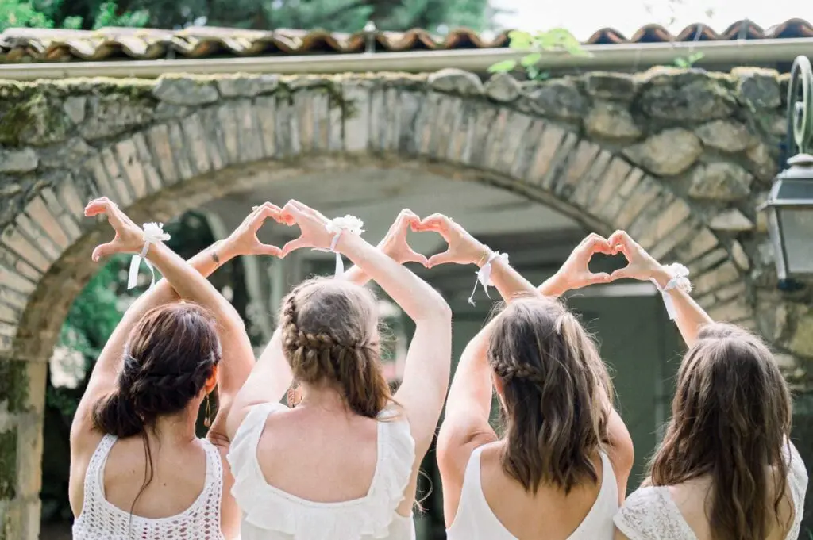
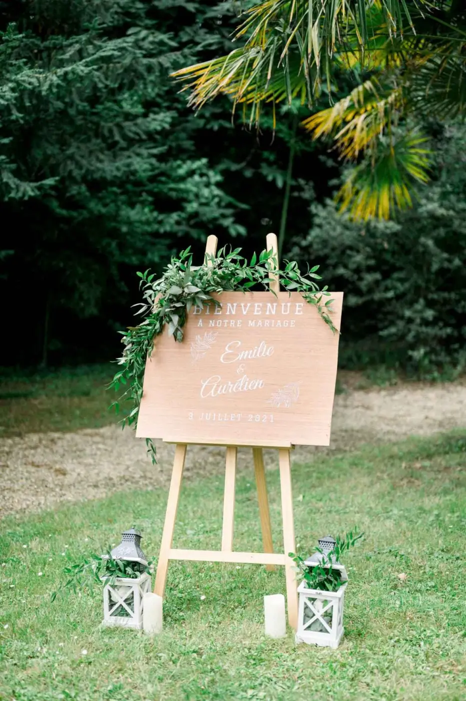
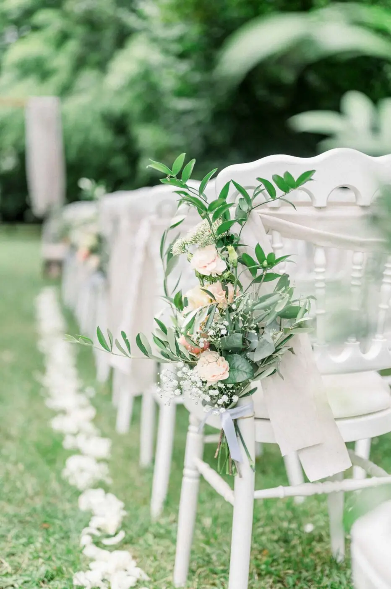

Champêtre chic
Mariage simple et authentique
Avec la mariée, j’ai travaillé sur les indispensables d’un design romantique sur mesure et chic : du rouge, du blanc, des bougies, des plumes et des fleurs… Tout l’esprit qu’elle voulait faire transmettre.
En plus de tous ces éléments, celui de l’éclairage en est un particulièrement important dans une scénographie romantique. Il s’agit en effet de donner une impression intime, personnelle. Pour cela, j’ai favorisé les bougies et les lumières douces en général.
Les voilages aussi sont des éléments qui doivent se caractériser par leur souplesse et leur légèreté qui offre aussi un aspect poétique à votre salle de réception.


Scénographie
En tant que wedding planner haut de gamme mais surtout wedding designer sur la région Bordelaise, je peux répondre à vos attentes en vous proposant un univers de mariage qui ne ressemblera à aucun autre... le vôtre ! Si vous sentez avoir besoin d'aide, envoyez-moi un mail !
Romantisme
N'hésitez pas à jouer avec les transparences qui donneront, en plus, une touche de luxe et d'originalité !
